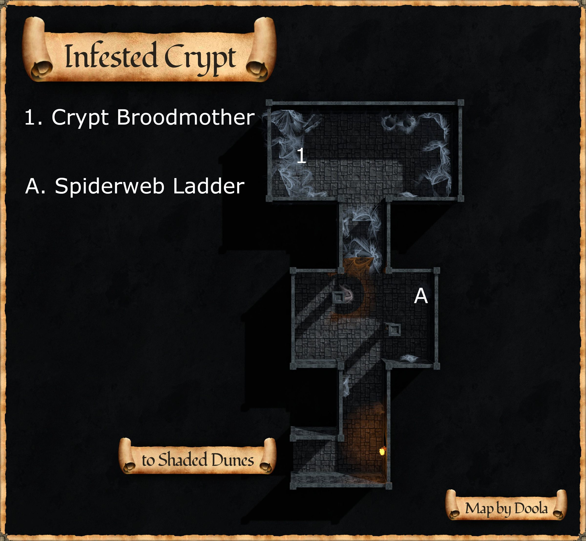
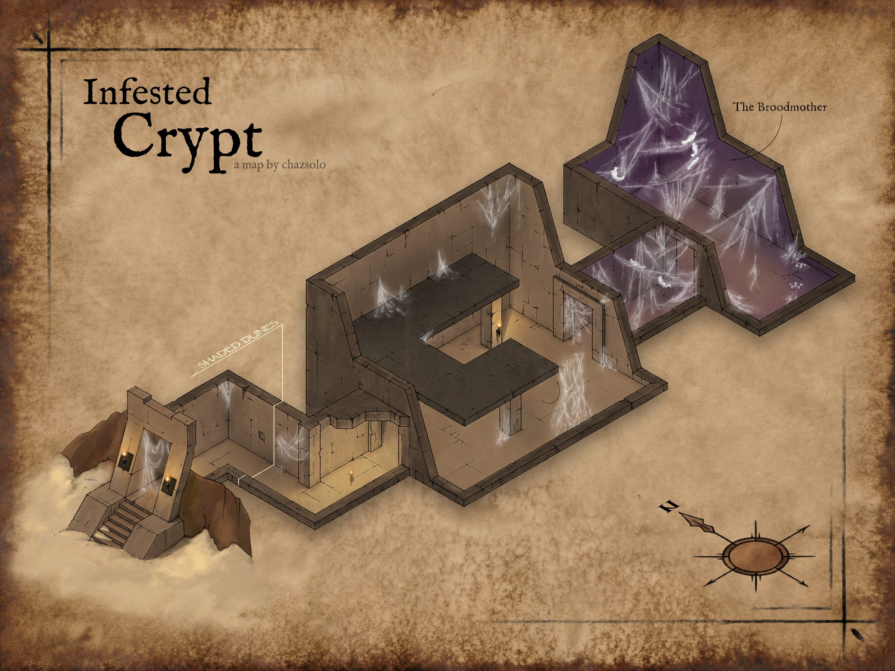
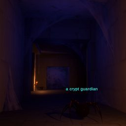

Infested Crypt
Little is known of Infested Crypt at this time.
Map



Map legend (from the wiki map box)
1. a crypt broodmother ___ A. Spiderweb ladder up to a balcony that wraps around the room.
Named mobs
| Named | Lvl | Race / class | Where | Known loot (hover) |
|---|---|---|---|---|
| a frenzied crypt guardian | ~12 | Spider / Fighter | - | Barbute of the Frenzied Watch, Guardian's Spiderhide Wraps, Venomdrop Earring |
| a crypt broodmother | 16 | Spider / Fighter | - | Broodmother Spider Fang, Broodwarden Carapace, Blood-Crest Vambrace |
Mobs & NPCs (camps by level)
Rows with a level are huntable camps; rows without are usually town NPCs or not yet documented.
| Name | Lvl | Race | Class | Where | Notes |
|---|---|---|---|---|---|
| a crypt creeper | 8 - 9 | Spider | Rogue | - | |
| a crypt guardian | 8 - 9 | Spider | Fighter | - | |
| a large crypt hatchling | 8 - 9 | Spider | Fighter | - | |
| a large crypt spiderling | 8 - 9 | Spider | Fighter | - | |
| a crypt broodmistress | 10 - 12 | Spider | Fighter | - | |
| a large crypt broodmatron | 12 - 14 | Spider | Fighter | - | |
| a large crypt creeper | 12 - 14 | Spider | Rogue | - | |
| a large crypt guardian | 12 - 14 | Spider | Fighter | - | |
| a crypt hatchling | - | Spider | Fighter | - | |
| a crypt spiderling | - | Spider | Fighter | - | |
| a frenzied crypt hatchling | - | Spider | Fighter | - | |
| a frenzied crypt spiderling | - | Spider | Fighter | - |
Quests
| Quest | Reward | Giver | Min lvl |
|---|---|---|---|
| Spectral Armor Quest | Uknown | A master blacksmith | - |
Gear that drops here
| Slot | Item | Key stats (wiki) | How to get | Lvl | Classes |
|---|---|---|---|---|---|
| Head | Barbute of the Frenzied Watch | AC 11, AGI +3, HP +5 | Named drop: a frenzied crypt guardian (lvl ~12) — Infested Crypt, - | 12 | CLR FTR INQ PAL SHD |
| Neck | Damaged Spider Amulet | AC 3, INT +2, HP +5, Effect: Way of the Web (On Click. Any Slot. Casting Time: Instant Level: 1) | Named drop: a frenzied crypt guardian (lvl ~12) — Infested Crypt, - | 12 | All classes |
| Wrist | Guardian's Spiderhide Wraps | AC 5, INT +1, Mana +5 | Named drop: A frenzied crypt guardian (lvl ~12) — Infested Crypt, - | 12 | ARC BRD BST CLR DRU FTR INQ MNK PAL RNG ROG SHD SHM SPB |
| Ear | Venomdrop Earring | STA +1, INT +2, Mana +5 | Named drop: A frenzied crypt guardian (lvl ~12) — Infested Crypt, - | 12 | ELE ENC INQ NEC SHD SPB WIZ |
| Wrist | Blood-Crest Vambrace | AC 12, STR +3, DEX +2 | Named drop: a crypt broodmother (lvl 16) — Infested Crypt, - | 16 | CLR FTR INQ PAL SHD |
| Primary, Secondary | Broodmother Spider Fang | DMG 7 / DLY 23, STR +3, DEX +1, Effect: Weak Poison | Named drop: a crypt broodmother (lvl 16) — Infested Crypt, - | 16 | ARC BRD BST ELE ENC FTR INQ NEC RNG ROG SHD SHM SPB WIZ |
| Chest | Broodwarden Carapace | AC 21, STA +1, WIS +3 | Named drop: a crypt broodmother (lvl 16) — Infested Crypt, - | 16 | CLR FTR INQ PAL SHD |